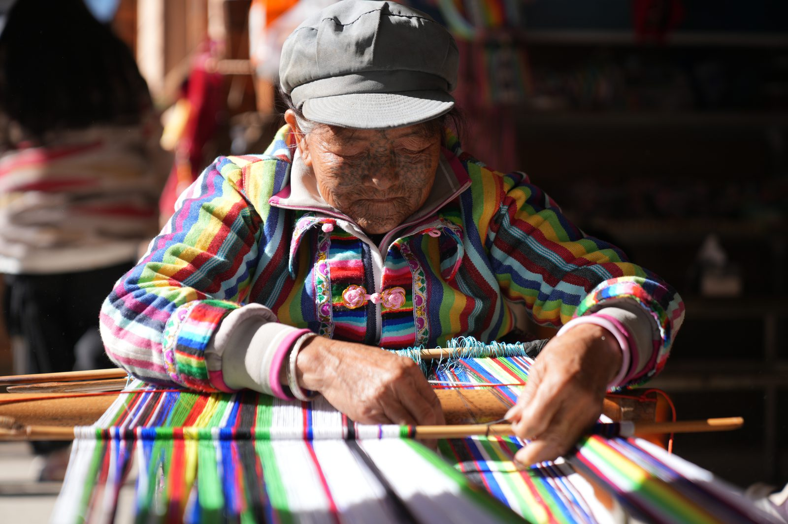
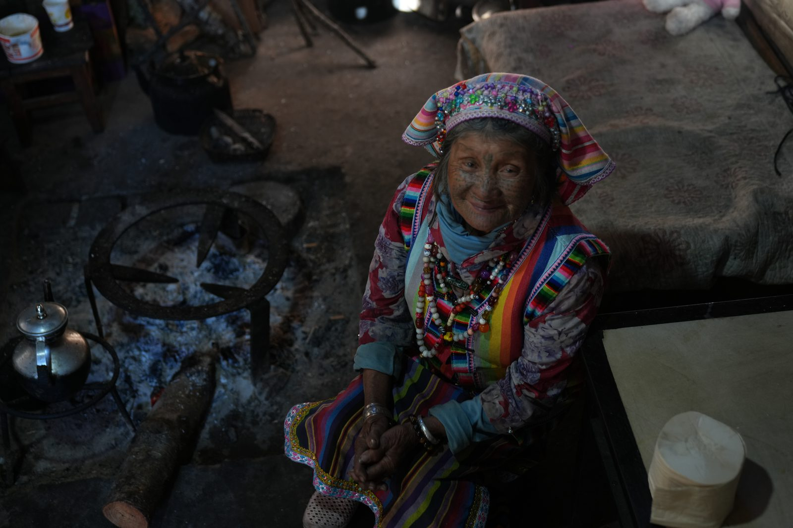
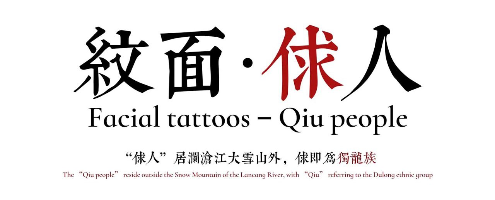
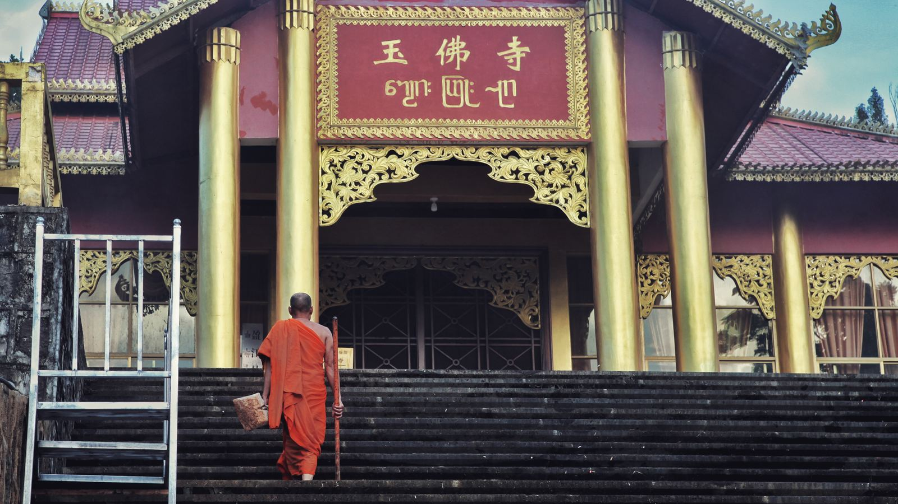
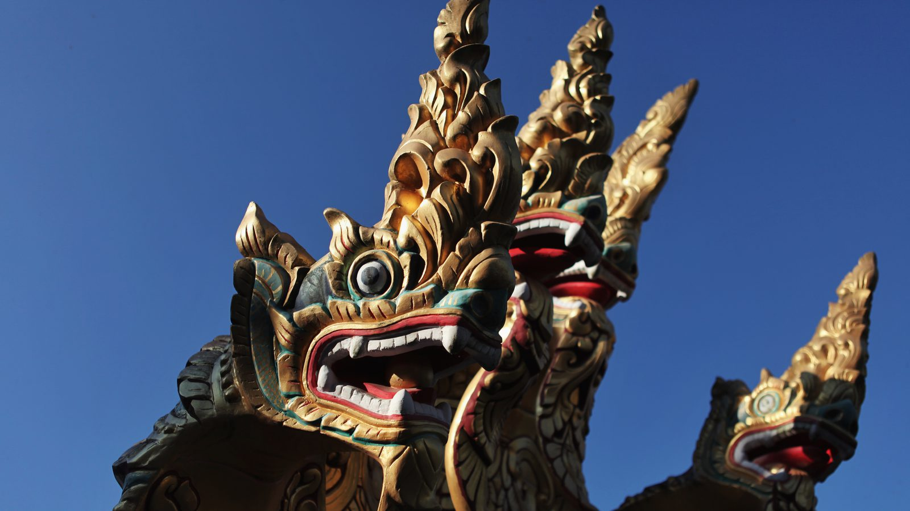
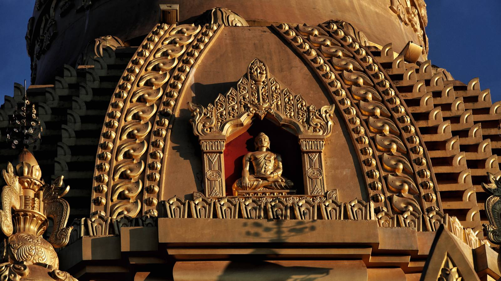
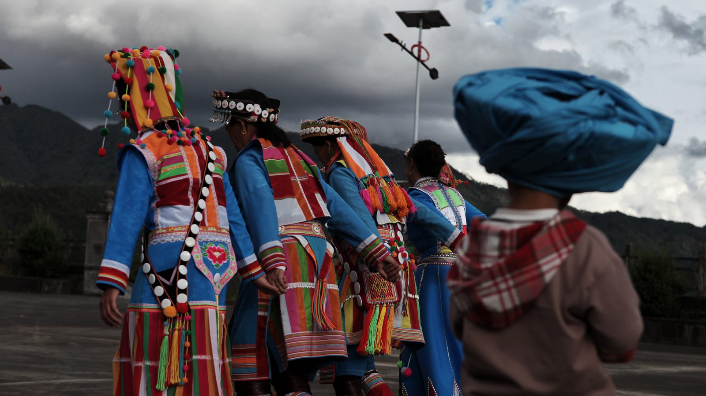
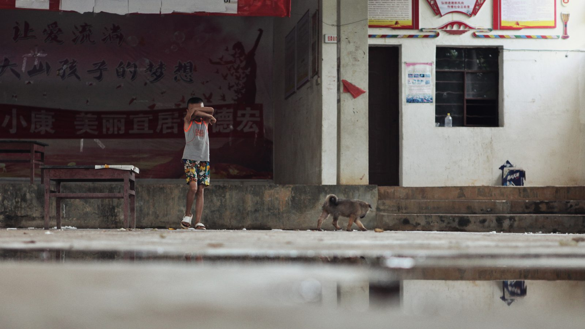

Creative Work
Documentary: Facial Tattoos – Qiu People 紋面·俅人

Watch the documentary on YouTube (2 min 40 s, with English subtitles)
A short documentary about the Qiu people, a historical name for the Dulong ethnic group, and their tradition of facial tattoos, filmed in the mountains of Yunnan, China, near the border with Myanmar.
I did the field photography and organized the footage, images, and writing into a narrative.
- Format
- Short documentary, 2 min 40 s
- Made
- December 2023 – June 2024 · Yunnan, China, near the Myanmar border
- My roles
- Producer, photographer, editor
- Subtitles
- Chinese and English, shown on screen
- Reach
- About 3,000 views across Douyin, Bilibili, and RedNote
From the fieldwork
Two of my photographs from filming in December 2023, shared with the permission of the people in them.


Field Photography
Six photographs · Yunnan, China · June 2023, taken on a children's charity project trip.




